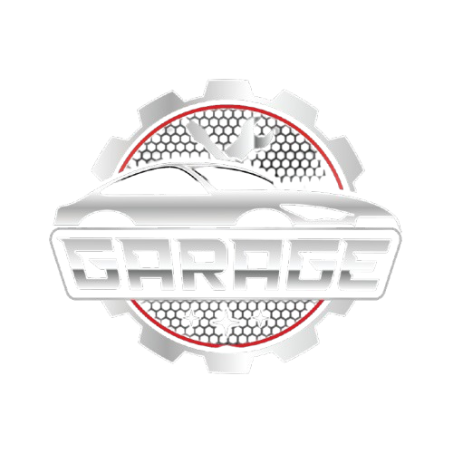
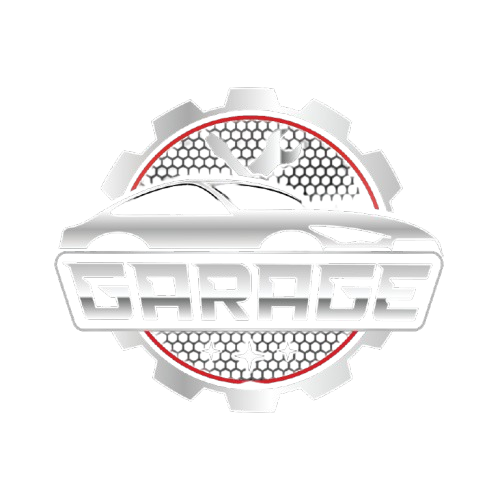

Keep your vehicle running smoothly with our professional car garage services. Fast, efficient, and customer-focused support you can trust.Your trusted car garage for expert repairs, maintenance, and diagnostics. We ensure top-quality service for all vehicle types.
Car Painting
Car oil painting helps restore your vehicle’s original shine and color by applying high-quality automotive paint.
Why Choose CARMECH FOR Oil Painting & Denting?
At CARMECH, we offer professional car painting and denting services to restore your vehicle’s original look and shine. Whether it's minor scratches, dents, or full-body paint damage, our expert technicians handle it all with precision and care.
We use high-quality paints and modern tools to ensure a flawless, factory-like finish. From color matching to rust removal, every step is performed to perfection. Our denting work is smooth, detailed, and maintains your car’s structural integrity.
We serve all types of vehicles and guarantee durable results that protect your car’s exterior from weather and wear. Quick turnaround time, affordable pricing, and a commitment to quality make CARMECH your trusted partner.
Choose CARMECH — because your car deserves the best look, always!
Why Choose CARMECH FOR Engine & Oil Works?
At CARMECH, we offer professional car painting and denting services to restore your vehicle’s original look and shine. Whether it's minor scratches, dents, or full-body paint damage, our expert technicians handle it all with precision and care.
We use high-quality paints and modern tools to ensure a flawless, factory-like finish. From color matching to rust removal, every step is performed to perfection. Our denting work is smooth, detailed, and maintains your car’s structural integrity.
We serve all types of vehicles and guarantee durable results that protect your car’s exterior from weather and wear. Quick turnaround time, affordable pricing, and a commitment to quality make CARMECH your trusted partner.
Choose CARMECH — because your car deserves the best look, always!
Best Services Provided Customer Of CARMECH!
At CARMECH, we offer professional car painting and denting services to restore your vehicle’s original look and shine. Whether it's minor scratches, dents, or full-body paint damage, our expert technicians handle it all with precision and care.
We use high-quality paints and modern tools to ensure a flawless, factory-like finish. From color matching to rust removal, every step is performed to perfection. Our denting work is smooth, detailed, and maintains your car’s structural integrity.
We serve all types of vehicles and guarantee durable results that protect your car’s exterior from weather and wear. Quick turnaround time, affordable pricing, and a commitment to quality make CARMECH your trusted partner.
Choose CARMECH — because your car deserves the best look, always!
 
